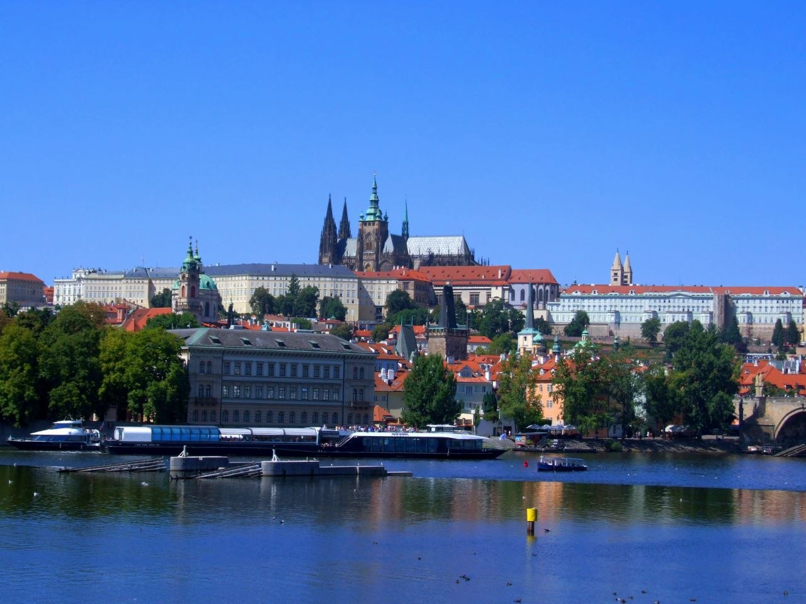
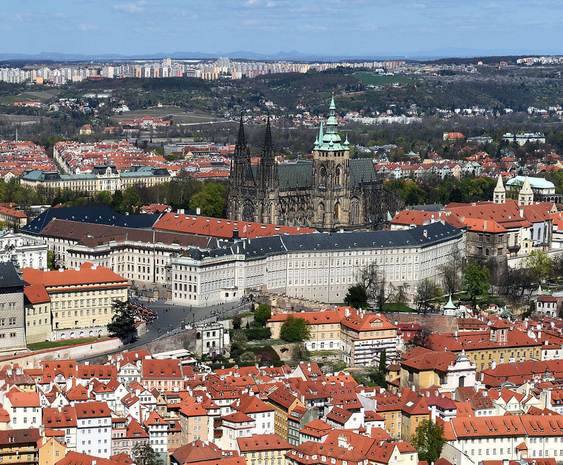
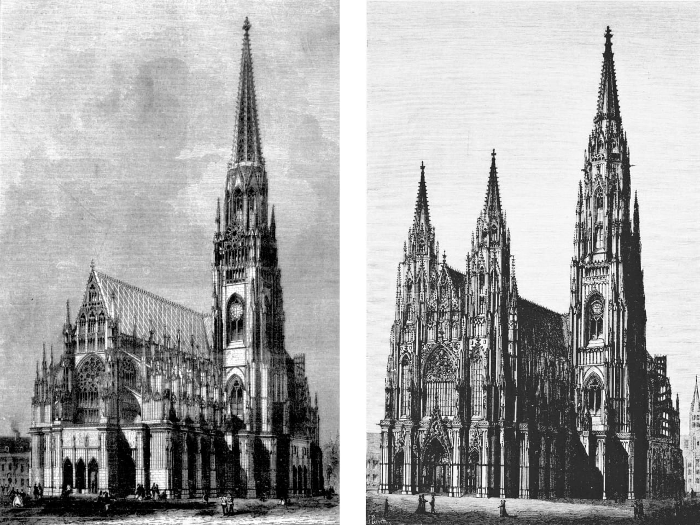
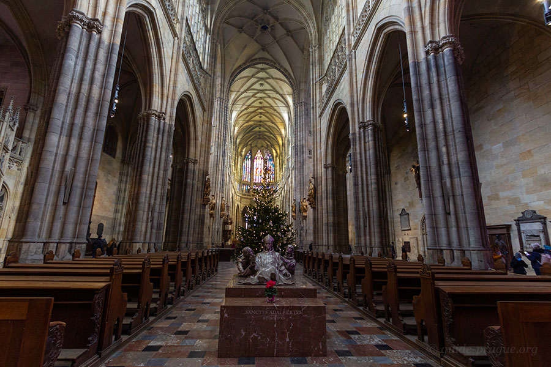
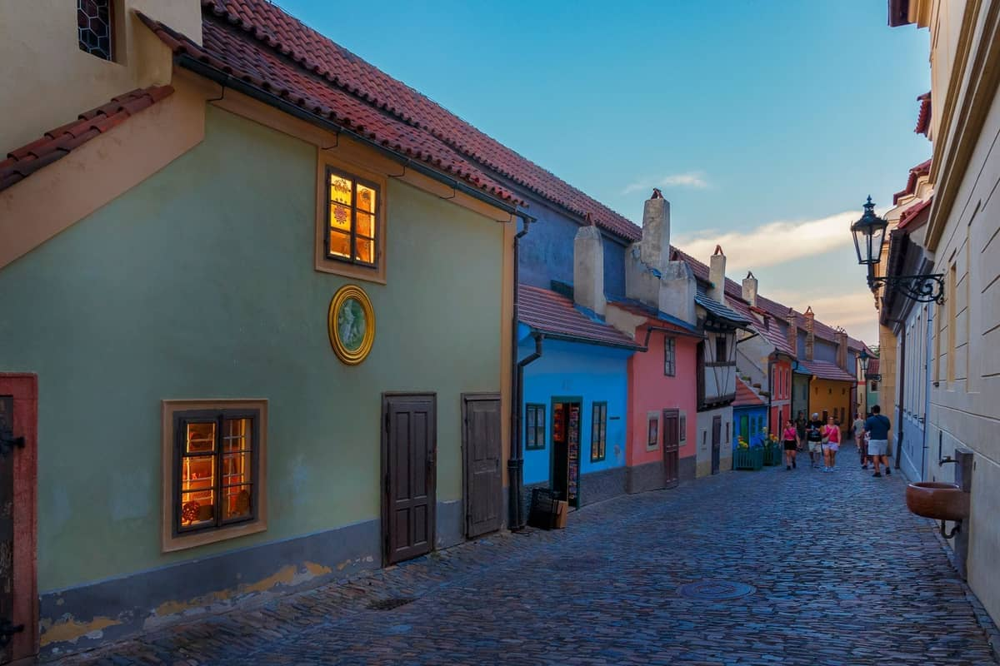

Пражский Град (Pražský hrad) — это целый укрепленный комплекс дворцов, храмов, оборонительных башен, садов и живописных средневековых улочек. Согласно Книге рекордов Гиннесса, он является самым большим древним замковым комплексом в мире, занимающим площадь около 70 000 квадратных метров.
Возвышаясь на утесе над левым берегом реки Влтавы, Град на протяжении более чем 1100 лет остается политическим, религиозным и культурным центром Чешского государства. Здесь принимались судьбоносные решения европейской истории: отсюда правили первые чешские князи из династии Пржемысловичей, короли Богемии, монархи из дома Люксембургов и Габсбургов, а также императоры Священной Римской империи. В наше время замок служит официальной резиденцией президента Чешской Республики.
Архитектурным доминантой и «душой» всего комплекса выступает кафедральный собор Святого Вита, Вацлава и Войтеха. Его готические шпили, взмывающие в небо почти на 100 метров, видны практически из любой точки Праги. В стенах собора не только проводились коронации чешских монархов, но и хранятся их священные реликвии, коронационные регалии с легендарной короной Святого Вацлава, а также покоятся останки правителей и святых покровителей страны.
Информация
- Официальное название: Pražský hrad
- Год основания Града: Около 880 года
- Период постройки собора: 1344–1929 гг. (585 лет)
- Высота главной башни: 96,6 метров
- Статус: Резиденция президента / Объект ЮНЕСКО
Святыня Чешских Королей
Комплекс объединяет архитектуру четырёх эпох: романские базилики, ажурную высокую готику, изящные ренессансные дворцы и барочный фасад. Внутри собора в особой сокровищнице за семью замками хранится корона Святого Вацлава — главная реликвия чешской государственности.
История Пражского Града
Основание крепости и первая ротонда
IX–X века (880 г.)Князь Борживой I из рода Пржемысловичей переносит княжеское городище на утес над Влтавой. В 925 году его внук, святой князь Вацлав, закладывает здесь каменную ротонду Святого Вита для хранения десницы святого, полученной от германского короля.
Романский замок и мощные стены
XI–XII векаРотонда разрушается, и на её месте строится романская базилика. В XII веке князь Собеслав I перестраивает деревянные оборонительные валы в мощные каменные стены с белыми башнями и закладывает каменный княжеский дворец.
Эпоха Карла IV и великая готика
1344 год (XIV век)Будущий император Карл IV закладывает грандиозный готический кафедральный собор. Первым зодчим становится француз Матьё Аррасский, а после его смерти — молодой гений Петер Парлерж, создавший знаменитые сетчатые своды.
Гуситские войны, опустошение и Ренессанс
XV–XVI векаГуситские войны на века останавливают строительство недостроенного собора. В 1541 году страшный пожар уничтожает большую часть построек Града. Замок восстанавливается Габсбургами уже в стиле ренессанс: возводятся Королевский сад, дворец Бельведер и Золотая улочка.
Окончание долгостроя и освящение
1929 год (XX век)Благодаря «Союзу по достройке собора» в XIX–XX веках западная часть храма с двумя высокими шпилями была достроена. В 1929 году, ровно через 1000 лет после смерти Святого Вацлава, собор был торжественно освящен.


Архитектурные шедевры и сокровища интерьера

Собор Святого Вита считается одним из главных памятников европейской готики. Его архитектура уникальна благодаря сочетанию классической французской школы и новаторских идей молодого архитектора Петера Парлержа, который приступил к работе в возрасте всего 23 лет.
Парлерж отказался от жестких правил традиционной готики и впервые в истории мировой архитектуры спроектировал сетчатые своды (Parler-vaults). Вместо привычных крестовых пролетов двойные диагональные ребра переплетаются в непрерывный динамичный рисунок, создавая ощущение легкости каменного потолка.
Особым ювелирным украшением собора является Часовня Святого Вацлава (Svatováclavská kaple), возведенная над гробницей святого покровителя Чехии. Нижняя часть стен часовни выложена более чем 1300 чешскими драгоценными камнями (яшмой, аметистами, агатами), вставленными в позолоченный штукатурный раствор. Стены расписаны фресками XIV и XVI веков с изображениями страстей Христовых и жизни Вацлава. Из часовни ведет потайная дверь, закрытая на 7 замков, ключи от которой хранятся у 7 главных лиц государства (включая Президента и Премьер-министра). Она ведет в коронную камеру с чешскими королевскими регалиями.
В центре нефа собора расположена пышная Королевская усыпальница из белого мрамора, выполненная нидерландским скульптором Александром Колином в XVI веке, а в подземной крипте покоятся чешские монархи, включая Карла IV, Вацлава IV и Максимилиана II.
«Золотая улочка» (Zlatá ulička)
Живописный уголок Града с крошечными двухэтажными домиками, встроенными прямо в арки средневековой крепостной стены. В XVI веке здесь жила чеканщики и замковая стража. Позже улочка обросла мифами: говорили, будто император Рудольф II поселил здесь алхимиков, пытавшихся получить философский камень. В доме №22 с 1916 по 1917 год жил писавший свои произведения Франц Кафка.
Помимо собора и Золотой улочки, комплекс включает Старый королевский дворец с его знаменитым Владиславским залом. Зал длинной 62 метра в свое время был самым большим перекрытым гражданским помещением в средневековой Европе. Его своды настолько высоки и прочны, что рыцари въезжали туда прямо на лошадях для участия в турнирах по специальной «Лестнице всадников».

Проклятие Короны Святого Вацлава
Старинная легенда гласит: любой самозванец или человек, надевший корону святого Вацлава без законного права на престол, непременно умрет мучительной смертью в течение года. В 1941 году нацистский протектор Богемии и Моравии Рейнхард Гейдрих во время осмотра сокровищницы самовольно примерил корону. Меньше чем через год он погиб в результате покушения чешских диверсантов.
Алхимическая лаборатория Рудольфа II
В XVI веке Прага превратилась в оккультный центр Европы. Император Рудольф II привлекал в Пражский Град лучших астрономов, магов и алхимиков того времени (включая Тихо Браге и Джона Ди). В подвалах Пороховой башни они пытались найти философский камень, создать эликсир бессмертия и превратить свинец в золото.
Колокол «Зигмунд»
На Южной башне собора висит самый большой колокол Чехии — «Зигмунд», отлитый в 1549 году. Он весит около 16,5 тонн, а для того, чтобы раскачать его тяжелый язык, требуется одновременная работа 4 звонарей.
Витраж Альфонса Мухи
В начале XX века один из витражей в северном нефе был создан знаменитым художником эпохи модерн Альфонсом Мухой. В отличие от традиционных средневековых стекол, он расписан яркими красками прямо по стеклу и изображает святых Кирилла и Мефодия.
Современное положение локации
Сегодня Пражский Град — это главная достопримечательность Чешской Республики и действующий центр государственного управления. В его стенах располагаются рабочие кабинеты президента, Администрация Президента и исторические государственные залы.
Ежедневно тысячи путешественников со всего мира приходят сюда, чтобы увидеть торжественную смену караула Президентской гвардии у главных ворот, побродить по садам и насладиться одной из лучших панорам Праги с смотровой площадки замкового холма.